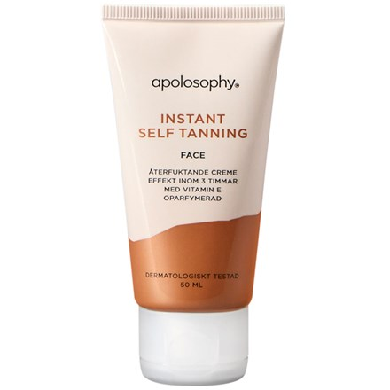
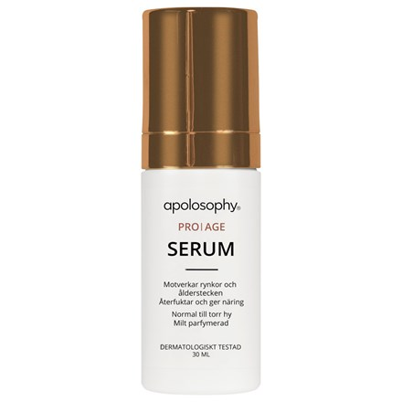
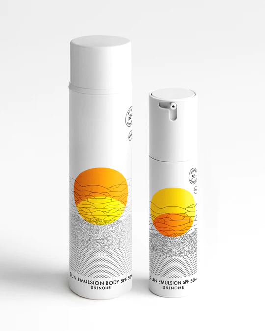
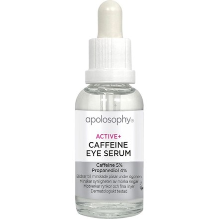

Ansiktsmask
Beskrivning: Piggar upp huden, förfinar linjer och ger en avslappnade effekt åt trötta ansiktsmuskler.
Pris: 35 kr
Fuktighetskräm
Beskrivning: Återfuktar huden och lämnar den mjuk och smidig, det innehåller glycerin vilket hjälper till att binda fukten i huden.
Pris: 159 kr
Anti-aging Serum
Beskrivning: Ett kraftfullt serum som reducerar synliga ålderstecken, tex fina linjer och rynkor, samtidigt som de bidrar till en fastare hud som förnyar sig.
Pris: 399 kr
Solskyddskräm SPF 30
Beskrivning: Skyddar huden mot skadliga sol strålningar samt ger återfuktning.
Pris: 277 kr
Ögonkräm
Beskrivning: En intensivt vårdande, skyddande och återfuktande ögonkräm som innehåller bland annat kreatin och karbamid som bidrar till att dämpa mörka ringar under ögonen och minska trötthetstecken.
Pris: 299 kr